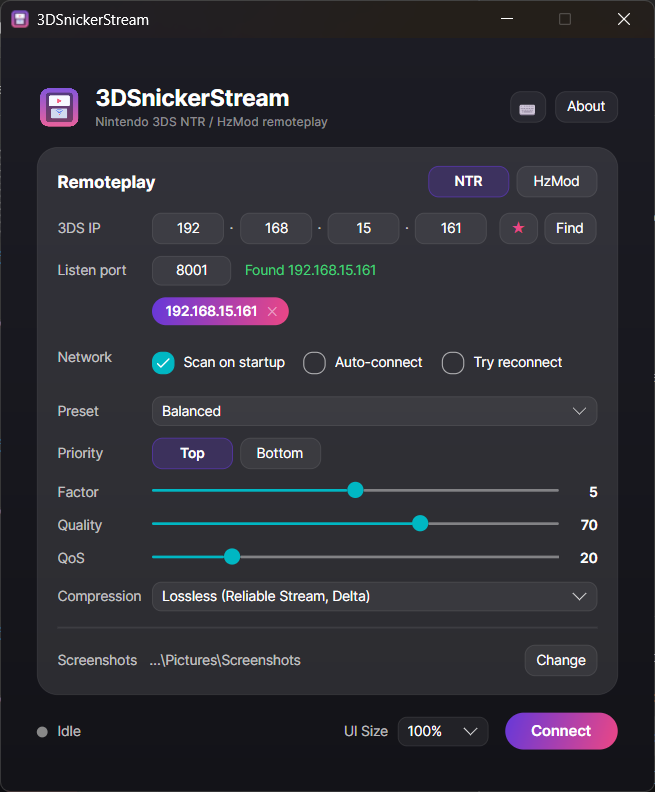
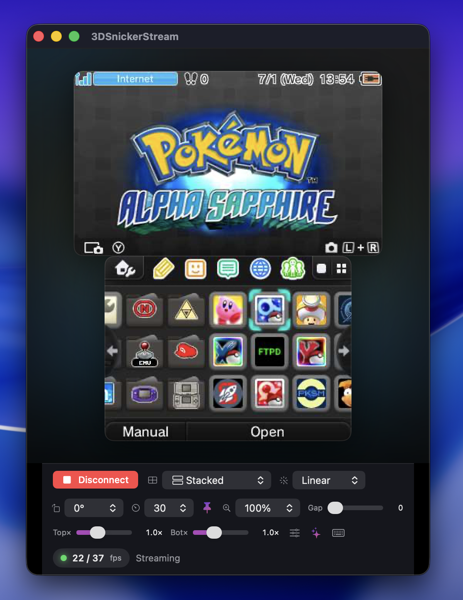

3DSnickerStream
3DSnickerStreamWhy this forkPor que esse fork
While building Gen6CTRPFrameworkOverhauled — a beginner-friendly overhaul of the Pokémon Gen-6 CTRPluginFramework — I kept needing to capture my 3DS screen. SnickerStream was already fantastic for that, so I forked it and added the things I was missing: per-screen color tuning, zoom, a clean capture mode, live gap & scale, network auto-connect and a responsive UI. This is that fork — with full credit to the original by RattletraPM. v2.0 rebuilds the whole app on a single cross-platform codebase, so the same features now run natively on Windows, macOS and Linux.
Enquanto eu criava o Gen6CTRPFrameworkOverhauled — um overhaul amigável do CTRPluginFramework de Pokémon Gen 6 — eu vivia precisando capturar a tela do meu 3DS. O SnickerStream já era sensacional pra isso, então fiz um fork e adicionei o que faltava pra mim: ajuste de cor por tela, zoom, um modo de captura limpo, gap & escala ao vivo, auto-conexão na rede e uma UI responsiva. Este é esse fork — com todo o crédito ao original do RattletraPM. A v2.0 reconstrói o app inteiro num único código multiplataforma, então os mesmos recursos agora rodam nativamente no Windows, macOS e Linux.

